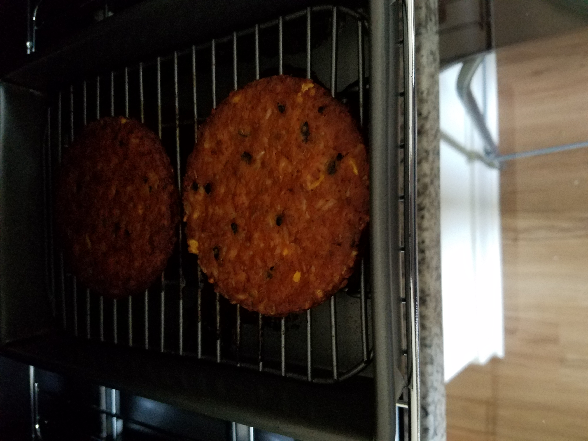

Garlic Shrimp Scampi on Wild Rice
- Prep: ~5 minutes, cooking time: ~10 minutes, Servings: Depends how much you eat.
- Ingredients: olive oil, garlic powder, seasonings, shrimp, wild rice.
- Combine olive oil, garlic powder and optional seasonings
- Preheat a skillet and then add the mixed oil.
- Add one cup of thawed shrimp.
- Cook for two-three minutes on each side.
- Prepare wild rice in rice cooker, cook for ~10 minutes./li>
- Add cooked shrimp on wild rice, serve.
Morningstar Black Bean Burgers

- Prep: ~1 minute, cooking time: ~15 minutes, Servings: Depends how much you eat.
- Ingredients: Morningstar Black Bean Burger patties.
- Add burger patties to pre-heated oven at 375 degrees.
- Cook for ten minutes.
- Flip over and cook for another ten minutes.
- Take out of oven, cool and serve.
- Weep soft tears at diet restrictions.
Quaker Oats Oatmeal
- Prep: ~5 minutes, cooking time: ~5 minutes. Servings: Depends how much you eat.
- Ingredients: Quaker Oats Oatmeal, water/milk.
- Add appropriate level of milk/water depending on amount of oatmeal used.
- Combine and cook for ~5 minutes.
- Serve immediately.
- Regret choice and vow to go back to instant oatmeal.